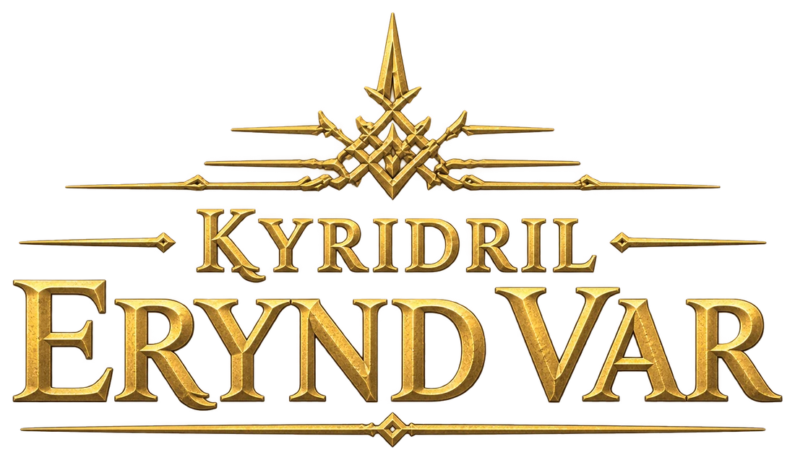

Assistance
Kyridril - Erynd Var · Volta Games
Nous écrire
Un souci, une question, une idée ? Écris-nous à
[adresse e-mail de contact].
Indique ton appareil (modèle, version d’iOS ou d’Android) et, si possible, une capture d’écran.
Questions fréquentes
Ma progression est-elle sauvegardée ?
Oui, automatiquement, sur l’appareil où tu joues, sans compte. Le jeu garde aussi 3 copies de secours : si la sauvegarde est abîmée, la plus récente est restaurée toute seule au lancement.
Comment transférer ma partie sur un autre appareil ?
- Sur l’ancien appareil, au camp : Réglages → Sauvegarde → Exporter.
- Copie le code
KEV1-…, partage-le, télécharge le fichier.kev, ou affiche le QR code. - Sur le nouvel appareil : Réglages → Sauvegarde → Importer, colle le code ou ouvre le fichier (ou scanne le QR code avec l’appareil photo), vérifie l’aperçu, puis Remplacer.
La progression remplacée reste disponible dans l’onglet Secours. Le code ne contient que ta progression, aucune donnée personnelle. Cela marche aussi entre la version web et les applications iOS / Android.
Peut-on jouer sans connexion ?
Oui. Les applications iOS et Android contiennent tout le jeu : aucune connexion n’est nécessaire. Dans le navigateur, une première visite suffit : le jeu est ensuite gardé sur l’appareil, surtout une fois installé sur l’écran d’accueil.
Comment installer le jeu ?
- iPhone / iPad : depuis l’App Store, ou dans Safari via Partager → Sur l’écran d’accueil.
- Android : depuis Google Play, ou dans Chrome : au camp, Réglages → Installer le jeu.
- Ordinateur : jouer dans le navigateur (Chrome, Edge, Firefox, Safari), installable depuis la barre d’adresse.
J’ai désinstallé l’application, ai-je perdu ma partie ?
La sauvegarde est stockée dans l’application : la désinstaller l’efface. Avant de désinstaller ou de changer de téléphone, exporte ta partie (voir ci-dessus).
Le jeu se joue-t-il en mode portrait ?
Non, il se joue en paysage. Tourne ton appareil ; le jeu reste dans ce sens.
Le jeu ralentit, que faire ?
Ferme les autres applications, désactive le mode économie d’énergie, et dans les réglages du jeu, réduis les secousses de l’écran.
Le jeu est-il gratuit ?
Oui. Des achats facultatifs pourront être proposés plus tard ; ils seront gérés par l’App Store ou Google Play.
English
Need help with Kyridril - Erynd Var? Contact us at [adresse e-mail de contact] with your device model and OS version. The game is in French.
- Saves are automatic and stored on the device (no account), with 3 backup copies.
- Moving to another device: Camp → Réglages (Settings) → Sauvegarde (Save) → Exporter (Export) gives a code, file or QR code; on the other device use Importer (Import).
- Offline play: the iOS and Android apps need no connection; the web version works offline after the first visit.
- Privacy: no personal data is collected. See the privacy policy.